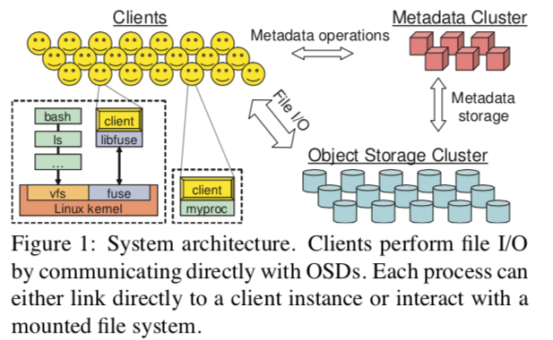
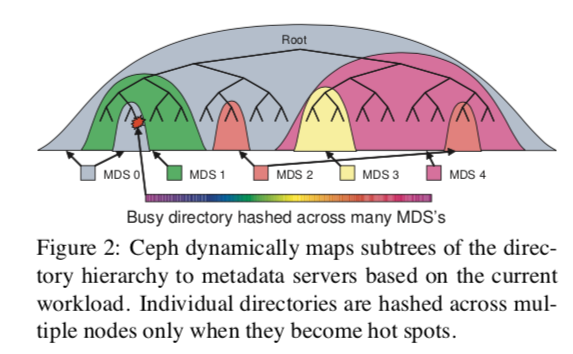
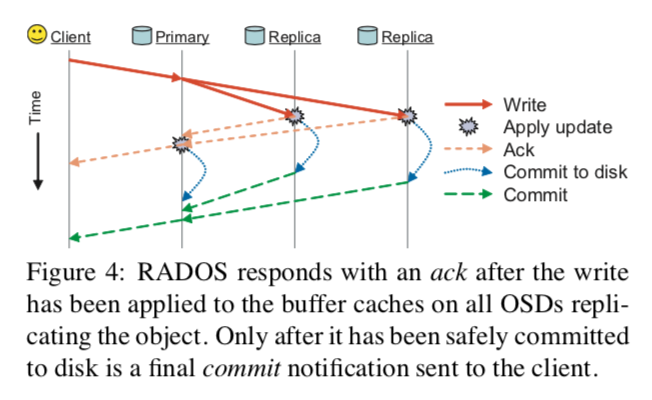
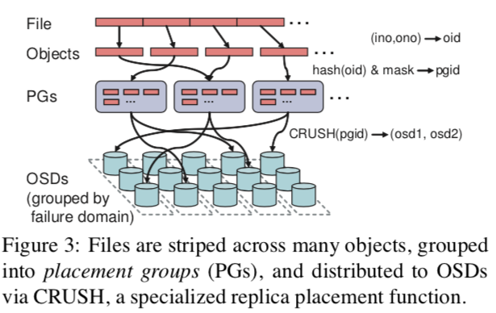

"Ceph: A Scalable, High-Performance Distributed File System"
Problem
How can we design a distributed file system that:
- are scalable (e.g., supports hundreds of petabytes and beyond; extreme workload case)
- flexible to adjust to different workloads
while maintaining good performance?
Background
-
Object-based storage (an abstraction layer between application and hard disks)
- Instead of hard disks, use intelligent object storage devices (OSD) (= CPU + network interface + local cache with an underlying disk or RAID)
- OSDs allows clients to read or write byte ranges to much larger (variably sized) named objects (no block-level inteface)
- Distribute low-level block allocation decisions to device themselves
-
Traditional architecture
- Contact metadata server (MDS) for metadata ops + contact OSDS to perform file I/O
- Problems:
- Single MDS is bottleneck
- Traditional FS interface becomes legacy: allocation list, inode tables
- OSDs can do more than just storing data
System Design
-
Design assumptions
- Large systems are built incrementally
- Node failures are normal
- Quality and character of workloads are shifting over time
-
High-level design
- Replace MDS with MDS cluster with dynamic metadata workload distribution
- Replace file allocation tables with data distribution function (e.g., CRUSH)
- Use OSDs for management of object replication, cluster expansion, failure detection, and recovery besides just data storage
-
Architecture

- Three components:
- Client
- MDS cluster: manages namespace (file names and directories); coordinate security, consistency, and coherence
- OSDs cluster: stores data + metadata
- Three components:
-
Client
- Runs on each host executing application code
- Expose a file system interface to applications
- Can be linked directly by application or mounted as a FUSE-based file system
- File I/O:
- client sends a request to MDS on file open; MDS returns file info + striping strategy (i.e., how th e file is mapped into a sequence of objects) + capability (i.e., permitted operations by clients)
- Synchronization:
- Client I/O for the same file access has to be synchronized (i.e., blocked until acked by OSDs)
- For performance-focus scenaro, allow application to relax consistency by providing POSIX I/O interface extensions
Note
POSIX semantics require: 1. reads reflect any data previously written 2. writes are atomic (i.e., the result of overlapping, concurrent writes will reflect a particular order of occurrence)
- Namespace operations:
- Read operations (
readdir,stat) and updates (unlink,chmod) are synchronized by MDS - Optimize common metadata access pattern (
readdirfollowed bystat) (trade coherence for performance) - Offer POSIX interface extension (
statlite) for application that don't need coherent behavior - Extend existing interface for performance (
statexample)
- Read operations (
-
Metadata management
- No file allocation metadata: object names = file inum + stripe number
- Objects distributed to OSDs using CRUSH
- Metadata storage
- Use journals for MSDs to stream updated metadata to the OSD cluster and for MDS failure recovery
- Inodes are embedded within directories, allowing the MDS to prefetch entire directories with a single OSD read request
- Use anchor table to keep the rare inode with multiple hard links globally addressable by inum (avoid large but sparse inode table)
- Dynamic Subtree Partitioning
- Adjustable to dynamic workloads (vs. static subtree paritioning) and maintain metadata locality and opportunities for metadata prefetching and storage (vs. hash)
- How it works:
- Each MDS measures the popularity of metadata within the directory hierarchy using counters with an exponential time decay
- Any operation increments the counter on the affected inode and all if its ancestors up to the root directory
- MDS load values (i.e., counters) are periodically compared, and appropriately-sized subtrees of the directory hierarchy are migrated to maintain load balancing
- Traffic control
- The contents of heavily read directories (e.g., many opens) are selectively replicated across multiple nodes
- Directories that are particularly large or experiencing a heavy write workload (e.g., many file creations) have their contents hashed by file name across the cluster
- Clients can contact MDS server directly for rare metadata and are provided different MDS node for accessing popular metadata

-
Distributed object storage
- Logically as a single logical object store and namespace: Reliable Autonomic Distributed Object Store (RADOS)
- Data distribution with CRUSH
- Distributes new data randomly; migrates a random subsample of existing data to new devices; uniformly redistributes data from removed devices
- How it works:
- Ceph maps objects into placement groups (PGs) using a simple hash function, with an adjustable bit mask to control the number of PGs
- PGs are assigned to OSDs using CRUSH (Controlled Replication Under Scalable Hashing): a pseudo-random data distribution function that efficiently maps each PG to an ordered list of OSDs upon which to
store object replicas
- To locate any object, CRUSH requires only the placement group and an OSD cluster map: a compact, hierarchical description of the devices comprising the storage cluster
- Cluster map incorporates clusters physical or logical composition and potential sources of failure
- Replication
- Using a variant of primary-copy replication
- How it works:
- Data is replicated in terms of PGs, each of which is mapped to an ordered list of \(n\) OSDs (for \(n\)-way replication)
- Clients send all writes to the first non-failed OSD in an object's PG (the primary), which assigns a new version number for the object and PG and forwards the write to any additional replica OSDs
- After each replica has applied the update and responded to the primary, the primary applies the update locally and the write is acknowledged to the client
- Reads are directed at the primary
-
Data safety
- Two requirements:
- Low-latency updates (updates should be visible to other clients asap)
- Data is safely replicated after writes
- How it works:
- The primary forwards the update to replicas, and replies with an ack after it is applied to all OSDs' in-memory buffer caches, allowing synchronous POSIX calls on the client to return (satisfy requirement 1)
- A final commit is sent when data is safely committed to disk (satisfy requirement 2)

- Two requirements:
-
Failure detection
- Each OSD monitors those peers with which it shares PGs (existing replication traffic as liveness signal); an explicit ping is sent if an OSD has not heard from a peer recently
- An unresponsive OSD will have its responsbility (update serialization, replication) temporarily pass to the next OSD in each of its PGs
- OSD that cannot be recovered will be out of data distribution and another OSD joins to re-replicate its contents
- A small cluster of monitors collects failure reports and filters transient or systemic problems centrally (to ensure correct and availability of cluster map)
-
Recovery and cluster updates
- OSDs maintain a version number for each object and a log of recent changes for each PG
- On cluster updates, OSD checks local PGs and adjust itself to the new PG groups
- Version number is used to determine the latest PG version number
- Log is used to determine the correct PG contents
- Once OSD has the correct PG membership, each OSD independently updates its data by contacting peers

-
Object storage with EBOFS
- OSD manages its local object storage with EBOFS (Extent and B-tree based Object File System)
- Why new file system (instead of using ext3)?
- POSIX interface donesn't support atomic data and metadata update transactions
- High latency for journaling and synchronous writes
- EBOFS
- User-space file system
- Update serialization (for synchronization) is different from on-disk commits (for safety)
- Supports atomic transactions (writes and attribute updates on multiple objects)
- update function returns when in-memory cache updated with async callbacks on commit
- Use B-tree to locate objects, manage block allocation, and index collections (PGs)
- Use extents (instead of block list) for block allocation (for metadata compact)
- Free block extents are binned by size and sorted by location for locality and avoid fragmentation
- Metadata (execpt blokc allocation info) is in-memory
- Use copy-on-write
Additional Reading
comments powered by Disqus